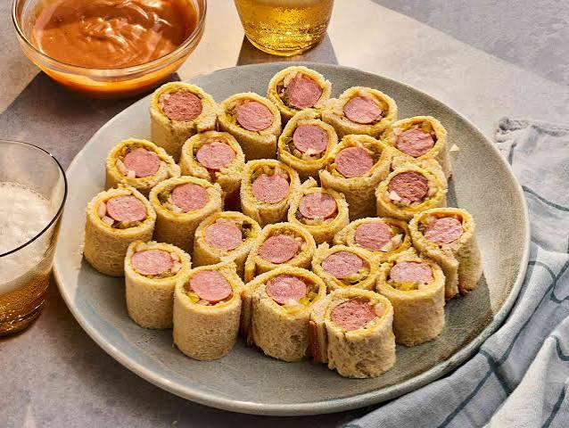

Return Home
Hotdog Roll Ups

These hot dog roll-ups are the perfect combination of simplicity, flavor, and comfort food. Wrapped in a buttery, golden-brown dough, each bite delivers a delicious balance of a crispy, flaky exterior and a juicy, savory hot dog. With minimal ingredients and a quick preparation time, this recipe is perfect for busy weeknights, game-day gatherings, or an afternoon snack.
What makes these hot dog roll-ups the best is their versatility and crowd-pleasing flavor. Both kids and adults will love them, and they can easily be customized with cheese, seasonings, or your favorite dipping sauces. Whether you're looking for a quick meal, an easy appetizer, or a fun family-friendly recipe, these hot dog roll-ups are guaranteed to become a household favorite!
Ingredients
- 8 (1-ounce) slices white bread
- 2 Tablespoons yellow mustard
- 4 thin slices sharp cheddar cheese, halved
- 8 beef hot dogs
- 4 Tablespoons minced yellow onion
- 2 Tablespoons plus 2 teaspoons sweet pickle relish
- 1/4 Cup barbecue sauce
- 1/4 Cup mayonnaise
- 1/2 Teaspoon seasoning salt
Steps
- Gather all ingredients
- Using a rolling pin, roll each bread slice until entirely flat. Trim just the crust off each bread slice, forming a 4x4 inch square. Spread each bread slice with an even layer of mustard (about 3/4 teaspoon per slice).
- Working with 1 slice of bread at a time, place a halved cheese slice on the edige of the bread closest to you; place 1 hotdog horizontally on top of the cheese slice. If needed, trim the ends of the hot dog so that no hot dog extends over the edge of the bread. Spoon 1 1/2 teaspoons onion horizontally across the cheese slice above the hot dog, followed by 1 teaspoon of relish.
- Roll up tightly, applying gentle pressure to help seal the bread seams together. Slice crosswise into 3 equal pieces and transfer to a serving platter. Repeat this process with the rest of the hot dogs. Preheat an air fryer to 400 degrees F for 5 minutes. Lightly coat tops and sides of roll-ups with cooking spray. Working in batches, add roll-ups to basket, spacing them 1/2-inch apart, and cook until bread is lightly golden brown, about 5 minutes.
- Stir together barbecue sauce, mayonnaise, and seasoned salt in a bowl until evenly combined.
- Enjoy!